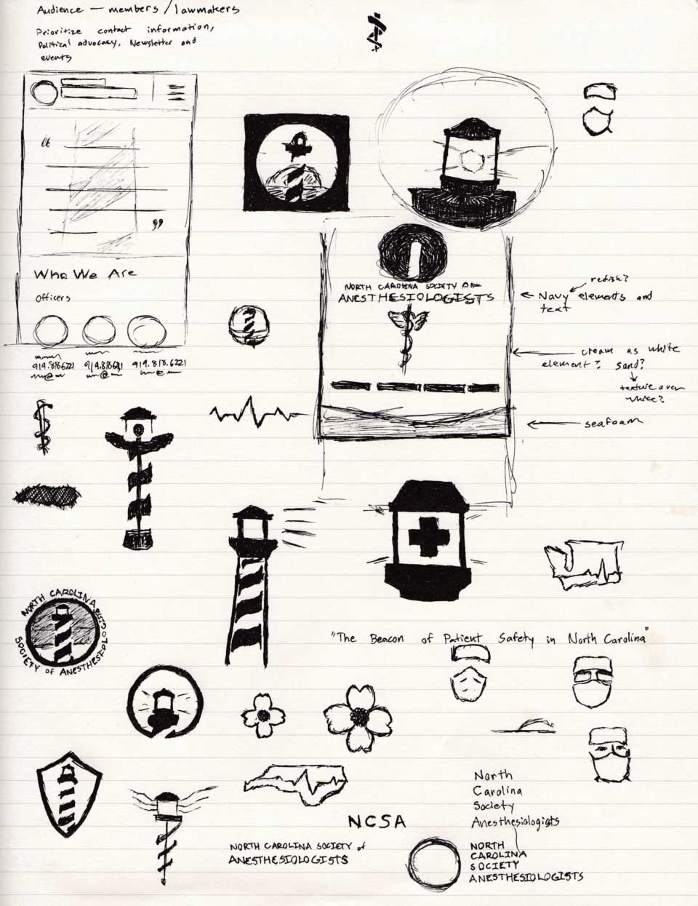
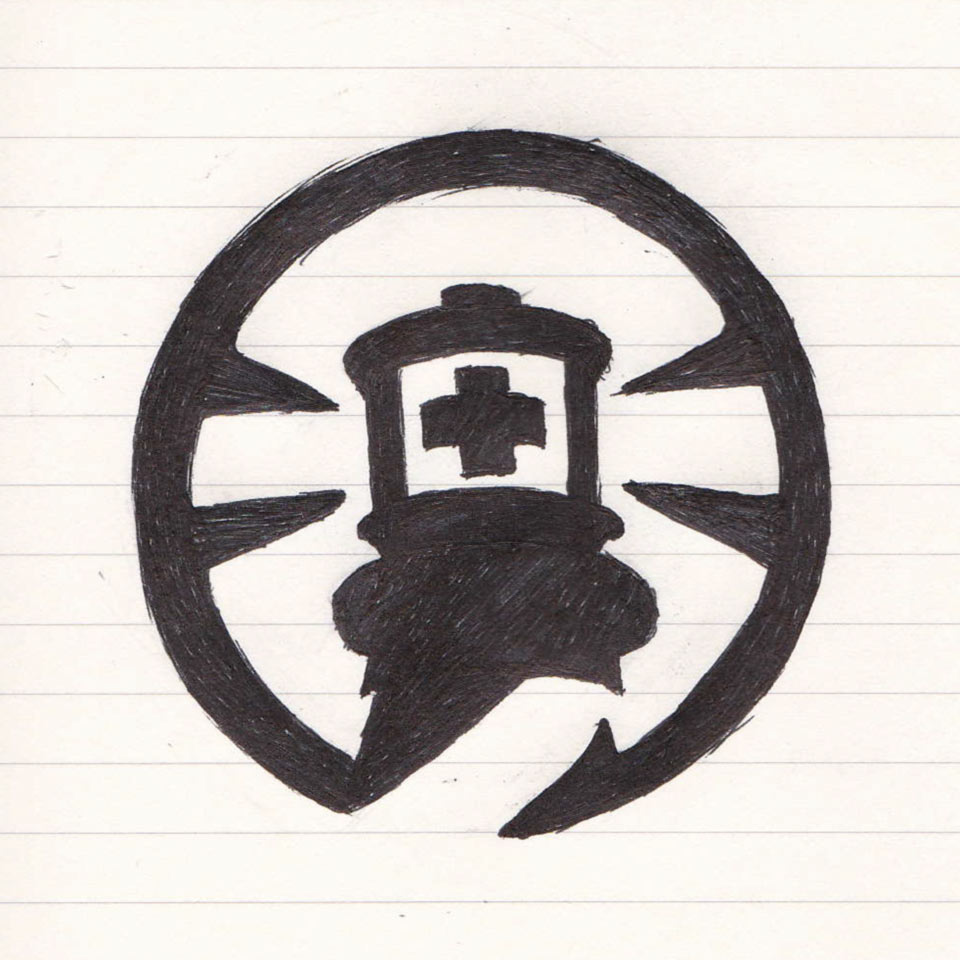
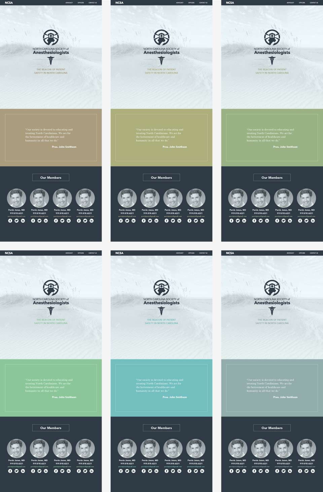
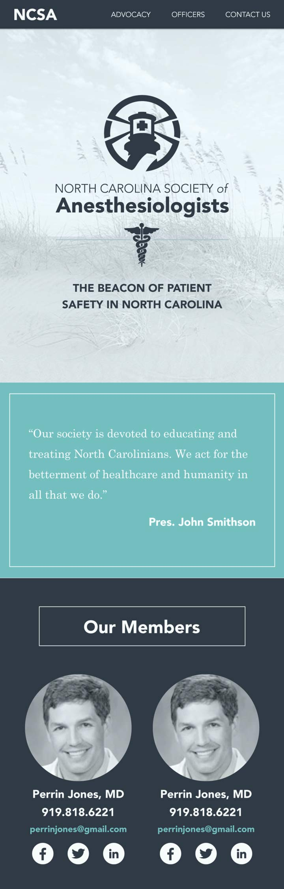

Initial Thumbnail Sketches
After initial contact with the client in April, I was inspired to immediately begin working, knowing the contract would be finalized soon.
A brand consists of many parts, but a strong logo brings all those parts together.
Some thumbnail concepts deviated strongly from repurposing their original lighthouse logo.
To give the NCSA its own character in comparison to the other state societies of anesthesiologists,
I determined the best direction was to keep the lighthouse (iconic of NC) to fit with the society's slogan: "The Beacon of Patient Safety in North Carolina."

First Logo Iteration
One thumbnail sketch in particular stood out, due to its balance and its potential in the refinement process. I brought a scan of the thumbnail into Illustrator and made a rough, mathematically-sound manifestation of the concept.

Planning The Next Iteration
After the outcome of refining the first iteration, I went back to the sketchbook to make adjustments and create a better base from which to design.
Second Logo Iteration
In the same process as with the first iteration, I took the sketch into Illustrator for refinement. This second iteration felt stronger than the first, but needed further detail to better reflect the society's slogan.
Multiple Options
I created numerous slight edits in order to provide the client with several viable options for a final logo.

Brand Testing
I have formed a foundation for how I believe the site should look based on the information available to me. Work will proceed when I receive the specific content the client wants displayed. These images display my exploration of potential color choices for the brand.

Beginning of Mockups
Here is a close up of the mockup in its current stage, barring the information from the client.